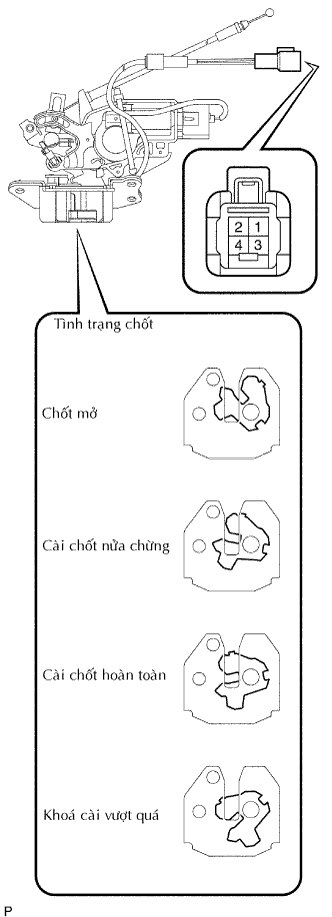

KHOÁ CỬA HẬU > KIỂM TRA |
| 1. KIỂM TRA KHOÁ CỬA HẬU |
|  |
Kiểm tra hoạt động của khóa cửa hậu
Dùng tô vít, dịch chuyển khoá đến vị trí khoá hoàn toàn.
Cấp điện áp ắc quy vào khóa cửa hậu và kiểm tra hoạt động của chốt.
| Điều kiện đô | Điều kiện tiêu chuẩn |
| Cực dương ắc quy (+) → Cực 4 Cực âm ắc quy (-) → Cực 3 | Gạt đến vị trị mở chốt. |